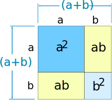
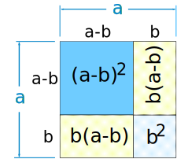
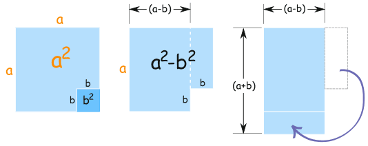

Special Binomial Products
See what happens when we multiply some binomials ...
Binomial
A binomial is a polynomial with two terms
 |
| example of a binomial |
Product
Product means the result we get after multiplying.
In Algebra xy means x multiplied by y
And (a+b)(a−b) means (a+b) multiplied by (a−b). We use that a lot here!
Special Binomial Products
So when we multiply binomials we get ... Binomial Products!
And we will look at three special cases of multiplying binomials ... so they are Special Binomial Products.
1. Multiplying a Binomial by Itself
What happens when we square a binomial (in other words, multiply it by itself) .. ?
(a+b)2 = (a+b)(a+b) = ... ?
The result:
(a+b)2 = a2 + 2ab + b2
This illustration shows why it works:

2. Subtract Times Subtract
And what happens when we square a binomial with a minus inside?
(a−b)2 = (a−b)(a−b) = ... ?
The result:
(a−b)2 = a2 − 2ab + b2
If you want to see why, then look at how the (a−b)2 square is equal to the big a2 square minus the other rectangles:

(a−b)2 = a2 − 2b(a−b) − b2
= a2 − 2ab + 2b2 − b2
= a2 − 2ab + b2
3. Add Times Subtract
And then there is one more special case ... what about (a+b) times (a−b) ?
(a+b)(a−b) = ... ?
The result:
(a+b)(a−b) = a2 − b2
That was interesting! It ended up very simple.
And it is called the "difference of two squares" (the two squares are a2 and b2).
This illustration shows why it works:
|  |
|
a2 − b2 is equal to (a+b)(a−b) |
Note: (a−b) could be first and (a+b) second:
(a−b)(a+b) = a2 − b2
The Three Cases
Here are the three results we just got:
| (a+b)2 | = a2 + 2ab + b2 | } | the "perfect square trinomials" |
| (a−b)2 | = a2 − 2ab + b2 | ||
| (a+b)(a−b) | = a2 − b2 | the "difference of squares" |
Remember those patterns, they will save you time and help you solve many algebra puzzles.
Using Them
So far we have just used "a" and "b", but they could be anything.
Example: (y+1)2
We can use the (a+b)2 case where "a" is y, and "b" is 1:
(y+1)2 = (y)2 + 2(y)(1) + (1)2 = y2 + 2y + 1
Example: (3x−4)2
We can use the (a-b)2 case where "a" is 3x, and "b" is 4:
(3x−4)2 = (3x)2 − 2(3x)(4) + (4)2 = 9x2 − 24x + 16
Example: (4y+2)(4y−2)
We know the result is the difference of two squares, because:
(a+b)(a−b) = a2 − b2
so:
(4y+2)(4y−2) = (4y)2 − (2)2 = 16y2 − 4
Sometimes we can see the pattern of the answer:
Example: which binomials multiply to get 4x2 − 9
Hmmm... is that the difference of two squares?
Yes!
4x2 is (2x)2, and 9 is (3)2, so we have:
4x2 − 9 = (2x)2 − (3)2
And that can be produced by the difference of squares formula:
(a+b)(a−b) = a2 − b2
Like this ("a" is 2x, and "b" is 3):
(2x+3)(2x−3) = (2x)2 − (3)2 = 4x2 − 9
So the answer is that we can multiply (2x+3) and (2x−3) to get 4x2 − 9